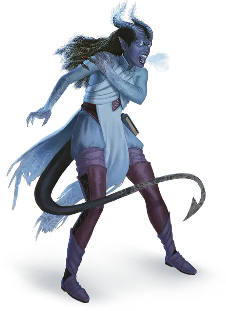

Неистовство ледяного великана
Fury of the Frost Giant
Требование: 4 уровень, черта «Удар Великанов (Ледяной удар)»

Вы проявляете ледяную мощь, характерную для ледяных великанов, что даёт вам следующие преимущества:
Увеличение характеристик. Увеличьте значение Силы, Телосложения или Мудрости на 1 при максимуме 20.
Рождённый изо льда. Вы получаете сопротивление урону холодом.
Холодное возмездие. Сразу же после того, как существо, которое вы можете видеть в пределах 30 футов от вас, попадает по вам броском атаки и наносит урон, вы можете реакцией нанести ответный удар сотворенным взрывом льда. Существо должно совершить спасбросок Телосложения (Сл равна 8 + ваш бонус мастерства + модификатор характеристики, увеличенной этой чертой). При провале оно получает 1к8 + ваш бонус мастерства урона холодом, а его скорость уменьшается до 0 до конца его следующего хода. Вы можете использовать эту реакцию количество раз, равное вашему бонусу мастерства, и вы восстанавливаете все израсходованные использования, когда заканчиваете продолжительный отдых.